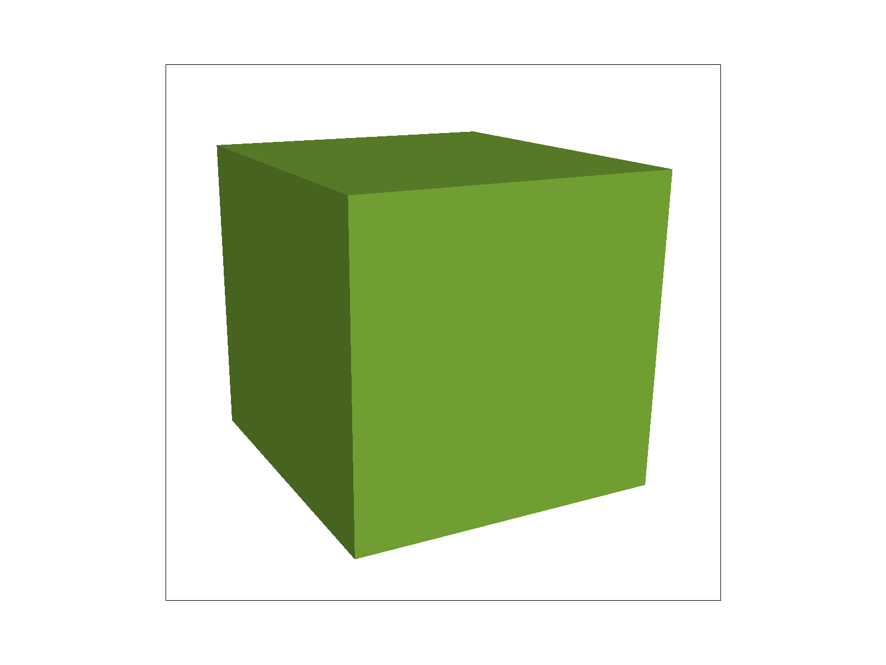
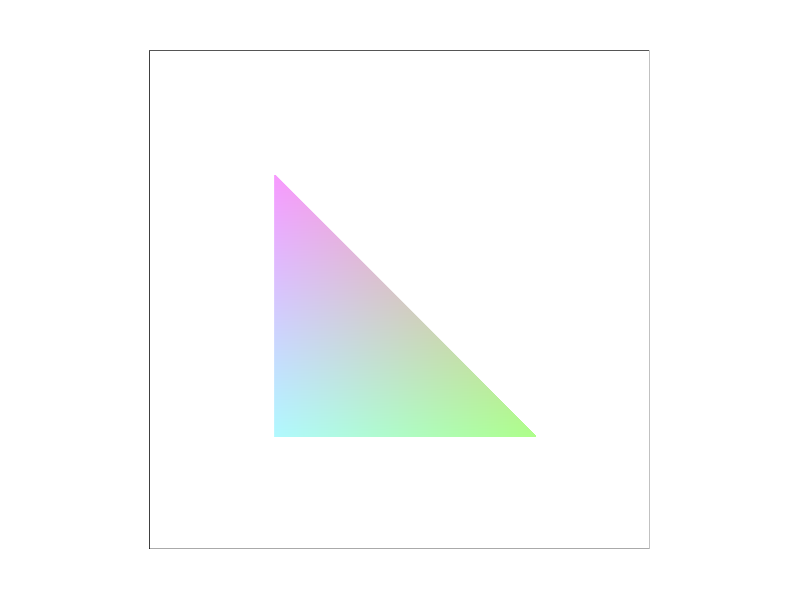
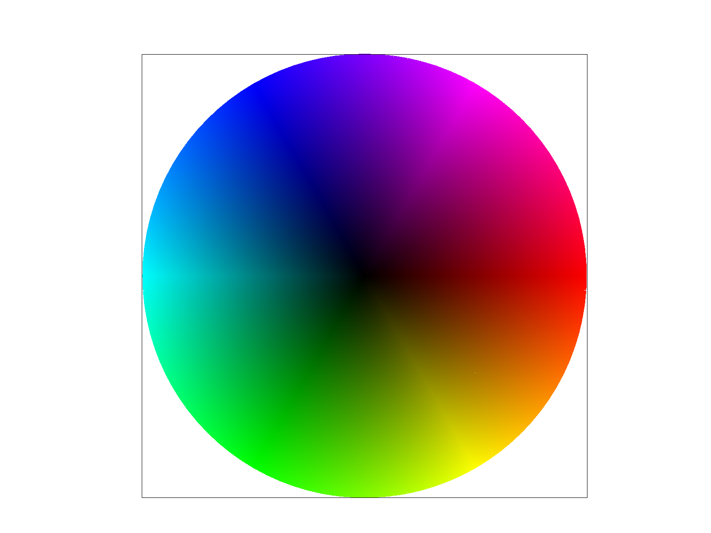

Test 3

Test 4

Test 5

Test 6
For this project we implemented rasterization in C++ that shows a visual representation of what different sampling and interpolation techniques look like. Rasterization takes an input image and converts it into output that appears as pixels on a display. This allows an easy compare and contrast of different methods.
I found the idea behind the anti-alising technique Supersampling to be very interesting as it allows us to take multiple samples within one pixel and take the average of those values to output an intermediate color value which helps to blur sharp lines and angles.
Test 3
Test 4
Test 5
Test 6
For this portion we iterate through all the points on the canvas and call a helper function point_triangle which takes the current x and y coordinates as well as those of the 3 vertices of the triangle and computes the dot product of the current point with the first vertex and second vertex, second and third, and third and first vertex. If the values of all three of these dot products have the same sign, it means that the point is within the triangle.
To make sure that this algoithm is no worse than one that checks each sample within the bounding box of the triangle, I computed the min/max x and y values of the 3 points. This allows us to narrow down the points we need to check to a rectangle around the triangle.

Sample Rate 1

Sample Rate 4
Sample Rate 9
Sample Rate 16
Supersampling is an antialiasing technique that involves taking multiple measurements within one pixel and setting the value of the pixel to the average of the subpixel samples. This blurs the sharp lines and edges you would see in rasterization otherwise. In other words, it decreases the appearance of jaggies.
I implemented this by changing the previous rasterization method to sample multiple times with the provided sample rate. For each pixel, the center of each of the subsections of the pixel are tested to determine if the section is within the triangle. If it is found that the point is within the triangle then sample_buffer is colored. Afterwards the average of the colors are calculated, which creates the burred line effect you see in the images above. To do that the resolve_to_framebuffer function was modified to calculate the averages of the colors.


Jittered sampling is different from supersampling as it partitions the pixel into different regions then chooses one randomly from each. Compared to supersampling, the results are more random and unpredictable, however it smooths out with more samples.
I manipulated Mr. Robot to look like Steve from Minecraft. I changed the body proportions by moving the points so that his body would be longer and arms and legs would be thicker. His head was made bigger by scaling it and rotated. I also changed the colors to be Steve's classic colors with his teal shirt and dark blue pants. I rotated the arms and legs to make it look like Steve is walking. Small detail that I added, the left arm is slightly shorter because it's meant to be behind the body.
I added another option to the GUI, by pressing b the border around the image will be removed, allowing for cleaner screenshots. I did this by modifying the redraw function.

Barycentric Interpolation on Pastel Values
The Barycentric coordinate system can be used to find the position of any point in a triangle by calculating its distance from each vertex. This can also be applied to determining the color of any point within the triange given the color of the three vertices by performing a weighed average based on its distances.
This was implemented by first transforming the given x and y values of the point into Barycentric coordinates. These values are then taken and weighted by distance with the colors of the vertices and finally added together to get the final color of the pixel.

Test 7